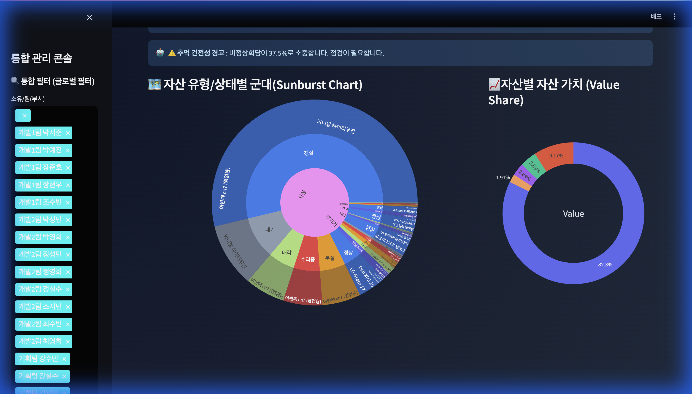
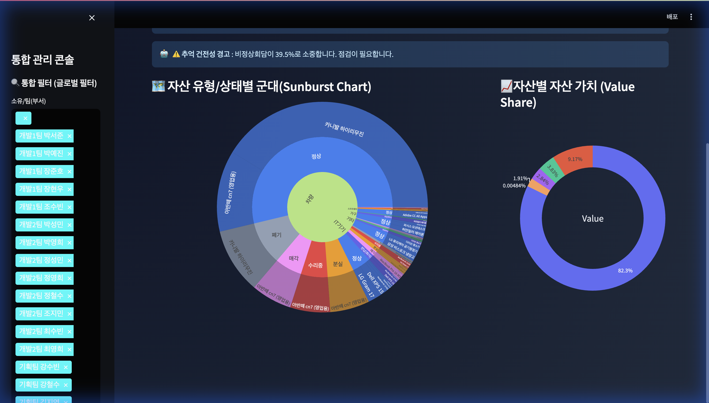
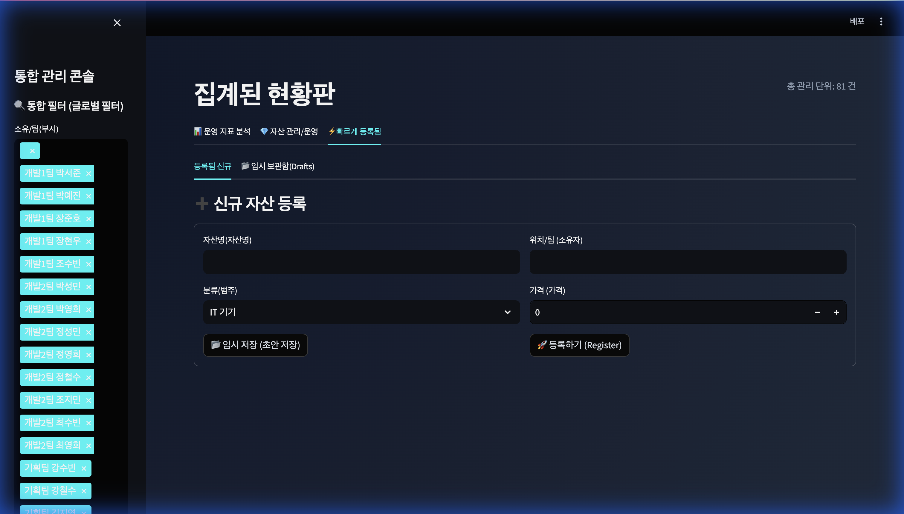

💡 Executive Summary
본 문서는 Asset Master Pro X 시스템의 직관적인 운영 방법과 도입을 통해 기대할 수 있는 90% 이상의 업무 효율 증대 효과를 상세히 기술합니다.
1. 운영자 메뉴얼 (Operating Manual)
Asset Master Pro X는 누구나 즉시 사용할 수 있는 Zero-Learning Curve를 지향합니다. 3가지 핵심 탭을 중심으로 자산 관리의 모든
업무를 처리할 수 있습니다.
1-1. 운영 지표 분석 (Dashboard)
대시보드는 전사 자산 현황을 실시간 데이터로 시각화하여 보여주는 관제탑입니다.

▲ 실시간 KPI와 Treemap 시각화가 적용된 메인 대시보드
- Dynamic KPIs: 총 자산 수, 가치(KRW), 가동률을 실시간으로 집계하며, 전월 대비 추세(Trend) 정보를 제공하여 변화 흐름을 즉시
파악합니다.
- Treemap Chart: 자산의 카테고리와 상태 위계를 사각형의 크기와 색상으로 시각화하여, 어떤 유형의 자산이 가장 많은 비중을 차지하는지
직관적으로 인지합니다.
- Horizontal Bar Chart: 자산 가치 상위 항목을 가로 막대 그래프로 정렬하여 단순 파이 차트보다 훨씬 명확한 비교가 가능합니다.
1-2. 자산 관리 및 운영 (Management Console)
개별 자산의 수명 주기(Lifecycle)를 관리하는 중앙 제어 센터입니다.

▲ 상세 필터링 및 원클릭 상태 변경이 가능한 관리 콘솔
- Global Filtering: 사이드바의 필터를 통해 특정 부서나 제품군만 즉시 조회할 수 있습니다.
- One-Click Action: 목록에서 정상 수리중 상태 태그를 클릭하는 것만으로 즉시 상태를 업데이트할 수 있습니다.
1-3. 빠르고 간편한 등록 (Registration)

▲ 필수 정보 입력과 임시 저장 기능을 제공하는 등록 화면
- Draft Mode: 정보가 불확실할 때는 '임시 저장' 해두고, 나중에 확정 등록할 수 있어 업무 유연성을 제공합니다.
2. 기술적 차별성 (System Advantages)
기존 레거시 시스템이나 엑셀 관리 방식과 차별화되는 Asset Master Pro X만의 기술적 강점입니다.
| 핵심 기능 |
상세 설명 및 이점 |
| Premium UI/UX |
2025 트렌드인 Glassmorphism 2.0과 Micro-interactions를 적용하여, 단순한 관리
도구를 넘어 몰입감 있는 사용자 경험을 제공합니다.
|
| Data Integrity |
Pydantic & FastAPI 기반의 강력한 데이터 검증 엔진이 탑재되어, 오타나 잘못된 형식의 데이터
입력을 원천 차단합니다.
|
| Accessibility |
반응형 타이포그래피와 고대비 모드를 지원하여, 데스크탑 뿐만 아니라 모바일 환경에서도 최적의 가독성을 보장합니다.
|
3. 비즈니스 기대 효과 (Business Impact)
🚀 업무 효율 90% 증가
수기 보고서 작성 업무가 '제로'가 됩니다. 실시간 대시보드 캡처 한 번으로
주간 보고가 완료됩니다.
🛡️ 자산 손실 최소화
AI 기반의 '관리 필요' 알림을 통해 방치된 고가 자산을 즉시 식별하고
회수하여 비용 낭비를 막습니다.